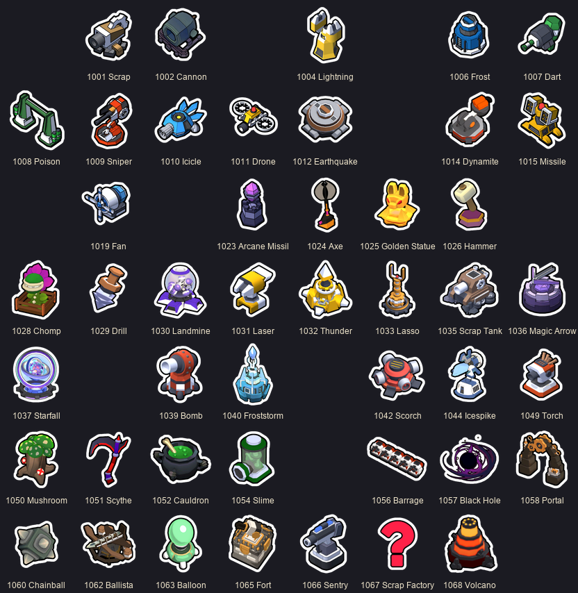
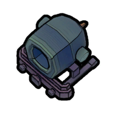
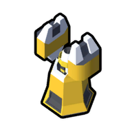
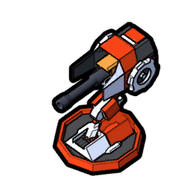
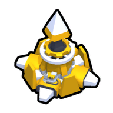
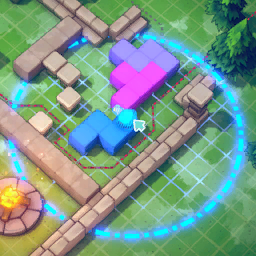

Tháp (Towers)
59 loại tháp (TowerSettingData, eItemType 1000–1068), 4 tier, 10 kiểu kích thước (1x1, 1x2, 1x3, 2x2, 3x3, 3x3 cross/corner/side, 2x3 L, 1x5), 7 hệ (Normal/Fire/Ice/Electric/Earth/Poison/Arcane).
Mô tả
- 59 loại tháp (TowerSettingData, eItemType 1000–1068), 4 tier, 10 kiểu kích thước (1x1, 1x2, 1x3, 2x2, 3x3, 3x3 cross/corner/side, 2x3 L, 1x5), 7 hệ (Normal/Fire/Ice/Electric/Earth/Poison/Arcane). Stat cơ bản: ATTACK_RANGE, SHOOT_RATE, DAMAGE, VISION_RANGE, CRIT_CHANCE, MULTI_TARGET, CRIT_DAMAGE_MULTI. Mỗi tháp có 2 nhánh nâng cấp A (đỏ) / B (xanh), chỉ 1 lần (GetMaxLevel=2). Người chơi mang tối đa 8 thẻ tháp (towerCardLimit) trong loadout, xây không giới hạn số lượng (trừ doLimitBuildingCount) tốn vàng, bán lại giảm giá dần theo số vòng.
- Chọn thẻ tháp → ObjectPlacementHandler placement tháp: cần khối bên dưới đủ kích thước (CanPlaceTower; canBuildWithoutTetrisBlock chỉ Fort Tower 1065), không đè tháp khác (CheckIsUpperPlacementAvaliableAtPositon), đủ vàng (TowerManager.GetBuildCost = baseCost × modifier giá: Sorcerer +30 %, perk ALL_TOWER_COST_INCREASE, relic Golden Roulette đổi giá mỗi vòng, Shard Cannon L1 +20 %/tháp cùng loại). Spawn(buildCost) → ABaseTower.Awake/CannonSpawnProc, ApplyTowerTalentBuff (Exploit Weakness crit 1/3/5 %), nhận buff tile dưới chân (OnPowerGridApply). Trong battle: Update → tìm mục tiêu theo eTowerTargetPriority (PROGRESS mặc định, LEAST_PROGRESS, HIGHEST_HP, LOWEST_HP, NEAREST, FARTHEST) qua MonsterManager.GetTargetByTowerPriority, Shoot theo SHOOT_RATE, tạo AProjectile; BulletHitCallback → AMonsterBase.Hit(damage, critChance, damageType, tower). Nâng cấp: Upgrade(A/B) trả GetUpgradeCost (base cost cố định hoặc % ; talent High Efficiency −5/10/15 %; Sorcerer ×1.3; perk HALF_UPGRADE_COST ×0.8?; Red/Blue Upgrade tile −75 %), áp list_UpgradeStats, có thể đổi hệ (doSwitchDamageType). Bán: SellTower → GetSellValue = baseCost × max(0.4, 1 − 0.2 × deployedRoundCount) + 80 % upgradeSpentCost + extraSellValue (Scrap Tower bán 0; talent Equivalent Exchange 5/10/20 % bán full; relic 4079? full).
Sơ đồ
Hình minh hoạ






Lưu ý
Mở khóa & điểm vào
Bộ 3 tháp khởi đầu ở Academy (3 bộ cố định: [Sentry 1066, Lightning 1004, Freeze 1006], [Dart 1007, Cannon 1002, Flamethrower 1003], [Torch 1049, Drone 1011, Lightning 1004]; reroll bằng Academy reroll). Tháp mới: thưởng clear stage (chọn 1/3), shop, rương, perk. Compendium ghi list_SeenTowerRecord/list_BuiltTowerRecord.
Điểm vào:
- Nút tháp 1–8 (BUILD_TOWER_1..8) / radial ring (TOGGLE_TOWER_RING)
- Click tháp trên sân → TOWER_CONTROL (đổi ưu tiên, nâng cấp, bán)
- UI_CraftTower (Scrap Master)
Cách hoạt động
- Xây tháp: ResourceManager.CreateTower(TowerSettingData) từ prefab → ObjectPlacementHandler.UpdateCheckTowerPlaceable / CanPlaceTower(placementColliders, canBuildWithoutTetrisBlock) → OnConfirmPlacement(doContinuousBuild với CONTINUOUS_BUILD/Shift, ALWAYS_PLACE_MULTIPLE) → ABaseTower.Spawn(buildCost, register) → TowerManager.RegisterTower, GridSystem.RegisterTower, OnTowerPlaced (Quy tắc: Tháp lớn hơn 1x1 cần khối phủ
- Tháp chọn mục tiêu và bắn: MonsterManager.GetTargetByTowerPriority(tower, center, range, minRange (DONUT: innerRangeRate 0.5), excludeFullPoison) → shootTimer theo 1/SHOOT_RATE; Shoot → ShootProc (abstract, mỗi tháp) → OnCreateBullet → AProjectile bay → BulletHitCallback → monster.Hit(dmg, GetCritChance, damageType, this) → RecordDamage/RecordKillCount → TowerDamageRecord (DPS meter TOGGLE_DPS_METER) (Quy tắc: Crit:
- Nâng cấp tháp (đỏ/xanh): GetUpgradeCost(type): TowerSettingData.GetBaseUpgradeCost (upgradeCost_Fixed hoặc % baseCost) → −talent LOWER_UPGRADE_COST → ×1.3 nếu Sorcerer → ×0.8 nếu perk 0x1bbe → ×(1 − 0.75×tile) nếu RED/BLUE_EVOLUTION tile → Upgrade(): trừ vàng, upgradeSpentCost += cost, áp list_UpgradeStats (ADD/MULTIPLY), doSwitchDamageType → OverrideDamageType, đổi skin (list_TowerSkin_UpgradeA/B) → PlayUpgradeEffec
- Bán tháp: GetSellValue: TowerSettingData.GetSellValue(deployedRoundCount) = baseCost × clamp(1 − 0.2×round, 0.4..1) + round(0.8 × upgradeSpentCost) + extraSellValue → Relic 0xfef (4079 Auctioneer's Cheat Sheet): trả full → IngameData.CoinGainedFromSellTowerInThisRound (không tính Loot Scavenging); Despawn (Quy tắc: Bán trong chuẩn bị = giá gốc (LOADING_TIP_11); talent Equivalent Exchange: 5/10/20 % cơ hội bán full; q
- Tháp hỏng (malfunction) / bị stun / mất kiểm soát: ApplyStun(duration): towerStunTimer, TowerStunProc; ApplyLostControl: bắn lung tung → Talent Resilient Forging −5/10/20 % thời gian; Shard Cannon L2 +50 % → OnTowerStunned event; UI_TowerActivateCounter (Quy tắc: eTowerNegativeStatusType: STUN, BUILDING, LOST_CONTROL, BLINDNESS, SLOW)
- Đổi ưu tiên mục tiêu: SwitchToNextTargetPriority → OnChangeTowerPriority → TowerManager.SetTowerDefaultTargetPriority(type) ghi mặc định cho loại tháp
- Ban tháp / giới hạn hệ: RequestBanTowerByType/ByElement/BySize/Slot(index, duration, sourceID) → IngameData.list_TowerSlotModifier → ResourceManager.SetTowerDamageTypeLimit cho Altar pact (chỉ 1 hệ) / endless (Quy tắc: Ban 1x1: 3 vòng; ban last tower: 5 vòng)
Luồng chi tiết theo code
Chọn thẻ tháp → ObjectPlacementHandler placement tháp: cần khối bên dưới đủ kích thước (CanPlaceTower; canBuildWithoutTetrisBlock chỉ Fort Tower 1065), không đè tháp khác (CheckIsUpperPlacementAvaliableAtPositon), đủ vàng (TowerManager.GetBuildCost = baseCost × modifier giá: Sorcerer +30 %, perk ALL_TOWER_COST_INCREASE, relic Golden Roulette đổi giá mỗi vòng, Shard Cannon L1 +20 %/tháp cùng loại). Spawn(buildCost) → ABaseTower.Awake/CannonSpawnProc, ApplyTowerTalentBuff (Exploit Weakness crit 1/3/5 %), nhận buff tile dưới chân (OnPowerGridApply). Trong battle: Update → tìm mục tiêu theo eTowerTargetPriority (PROGRESS mặc định, LEAST_PROGRESS, HIGHEST_HP, LOWEST_HP, NEAREST, FARTHEST) qua MonsterManager.GetTargetByTowerPriority, Shoot theo SHOOT_RATE, tạo AProjectile; BulletHitCallback → AMonsterBase.Hit(damage, critChance, damageType, tower). Nâng cấp: Upgrade(A/B) trả GetUpgradeCost (base cost cố định hoặc % ; talent High Efficiency −5/10/15 %; Sorcerer ×1.3; perk HALF_UPGRADE_COST ×0.8?; Red/Blue Upgrade tile −75 %), áp list_UpgradeStats, có thể đổi hệ (doSwitchDamageType). Bán: SellTower → GetSellValue = baseCost × max(0.4, 1 − 0.2 × deployedRoundCount) + 80 % upgradeSpentCost + extraSellValue (Scrap Tower bán 0; talent Equivalent Exchange 5/10/20 % bán full; relic 4079? full).
Phần thưởng
Thưởng
| Ngữ cảnh | Thưởng | Bằng chứng |
|---|---|---|
| Kill quái | baseReward vàng (×1.5 trên Gold Boost tile; DoubleCoin buff) | AMonsterBase.GetReward PowerGrid INCREASE_COIN |
Phần thưởng theo code
| Ngữ cảnh | Phần thưởng | Evidence |
|---|---|---|
| Kill quái | baseReward vàng (×1.5 trên Gold Boost tile DoubleCoin buff) | AMonsterBase.GetReward; PowerGrid INCREASE_COIN |
Số liệu chính
| Chỉ số | Giá trị | Nguồn |
|---|---|---|
| TowerSettingData.list_Stats | Ví dụ Basic 1000: DMG 2, RANGE 6, RATE 1.5, VISION 10, cost 10, up A 15g +2 DMG +1 RANGE, up B 15g ×2 RATE +3 RANGE; Sniper 1009 (2x2, Fire): DMG 70, RANGE 15, RATE 0.25, CRIT 50 %, cost 80; Thunder 1032 (3x3, Electric): DMG 200, RANGE 12, RATE 0.2, cost 125; Volcano 1068 (3x3, Fire, MULTIPLE 5): DM | Resources/towerdata |
| GetMaxLevel | 2 | ABaseTower.GetMaxLevel |
| sell multiplier | max(0.4, 1 − 0.2 × roundsDeployed) × baseCost + 0.8 × upgradeSpent | TowerSettingData.GetSellValue; ABaseTower.GetSellValue |
| upgrade cost modifiers | Sorcerer ×1.3; perk ×0.8; talent −5/10/15 %; Red/Blue tile −75 % | ABaseTower.GetUpgradeCost |
| innerRangeRate | 0.5 | TowerSettingData |
| crit damage default | +50 % (CRIT_DAMAGE_MULTI 0 → ×1.0 + 50 % loc) | ABaseTower.GetCritDamageMultiplier; Talents loc CRIT_CHANCE_DESC |
| Ancient Flame seal | +15 % crit (stat 0x10 +15), ×1.1 shoot rate mỗi vòng | ABaseTower.OnRoundEnd (AddBuffMultiplier 0x10,+15 / 0xb,×1.1) |
| eTowerTargetPriority | PROGRESS, LEAST_PROGRESS, HIGHEST_HP, LOWEST_HP, NEAREST, FARTHEST | enum |
| eTowerSizeType | 1x1, 1x2, 1x3, 2x2, 3x3, 3x3_Cross, 3x3_CornerOnly, 3x3_SideOnly, 2x3_LShape, 1x5 | enum |
Ghi chú thiết kế
- Lưu trữ: list_LoadoutTowerData (TowerIngameData: ItemType, Level, List_AdditionalBuff)
- Lưu trữ: list_CollectedTowerData
- Lưu trữ: list_BuiltTowerRecord
- Lưu trữ: list_SeenTowerRecord
Use case (7)
Bấm vào từng use case để mở. Mở/đóng tất cả
UC-01 Xây tháp
Các bước- ResourceManager.CreateTower(TowerSettingData) từ prefab
- ObjectPlacementHandler.UpdateCheckTowerPlaceable / CanPlaceTower(placementColliders, canBuildWithoutTetrisBlock)
- OnConfirmPlacement(doContinuousBuild với CONTINUOUS_BUILD/Shift, ALWAYS_PLACE_MULTIPLE)
- ABaseTower.Spawn(buildCost, register) → TowerManager.RegisterTower, GridSystem.RegisterTower, OnTowerPlaced
- IngameData.AddCoin(−cost); GameplayStats.RecordBuildTower; PlayerLifetimeData.RecordTowerBuilt
| Actor | Player |
|---|---|
| Trigger | Chọn slot tháp (BUILD_TOWER_n) và click ô |
| Điều kiện | IsCoinEnough(GetBuildCost); có khối phù hợp kích thước; không bị ban (IsTowerSlotBanned) |
| Kết quả | Tháp hoạt động ngay (kể cả trong battle; Shard Cannon L3: trễ 5 s) |
| Quy tắc / số liệu | Tháp lớn hơn 1x1 cần khối phủ hết ô; buff tile giảm hiệu lực theo diện tích; doLimitBuildingCount (Golden Statue 1, Portal 1, Blackhole 1, Scrap Factory 3) |
| Evidence | ObjectPlacementHandler.CanPlaceTower; TowerManager.GetBuildCost; ABaseTower.Spawn; TowerSettingData.doLimitBuildingCount |
UC-02 Tháp chọn mục tiêu và bắn
Các bước- MonsterManager.GetTargetByTowerPriority(tower, center, range, minRange (DONUT: innerRangeRate 0.5), excludeFullPoison)
- shootTimer theo 1/SHOOT_RATE; Shoot → ShootProc (abstract, mỗi tháp) → OnCreateBullet
- AProjectile bay → BulletHitCallback → monster.Hit(dmg, GetCritChance, damageType, this)
- RecordDamage/RecordKillCount → TowerDamageRecord (DPS meter TOGGLE_DPS_METER)
| Actor | System |
|---|---|
| Trigger | Update trong battle |
| Điều kiện | !IsNotFunctioning (không stun/lost control/dormant), có quái trong tầm và trong vision |
| Kết quả | Sát thương; kill → vàng baseReward về người chơi (OnTowerKillMonster) |
| Quy tắc / số liệu | Crit: GetCritChance = stat CRIT_CHANCE (0–100) + talent + buff; sát thương crit = ×(1 + CRIT_DAMAGE_MULTI/100), mặc định +50 % (loc Exploit Weakness); AREA: tất cả trong bán kính; MULTIPLE: n mục tiêu (towerAttackTargetCount) |
| Evidence | ABaseTower.Update/Shoot/BulletHitCallback; ABaseTower.GetCritChance; MonsterManager.GetTargetByTowerPriority |
UC-03 Nâng cấp tháp (đỏ/xanh)
Các bước- GetUpgradeCost(type): TowerSettingData.GetBaseUpgradeCost (upgradeCost_Fixed hoặc % baseCost) → −talent LOWER_UPGRADE_COST → ×1.3 nếu Sorcerer → ×0.8 nếu perk 0x1bbe → ×(1 − 0.75×tile) nếu RED/BLUE_EVOLUTION tile
- Upgrade(): trừ vàng, upgradeSpentCost += cost, áp list_UpgradeStats (ADD/MULTIPLY), doSwitchDamageType → OverrideDamageType, đổi skin (list_TowerSkin_UpgradeA/B)
- PlayUpgradeEffect; OnTowerUpgrade event; quest 18/19 đếm
| Actor | Player |
|---|---|
| Trigger | UPGRADE_RED / UPGRADE_BLUE trong TOWER_CONTROL |
| Điều kiện | !IsMaxLevel, đủ vàng |
| Kết quả | level=2, stat mới, mô tả _UPGRADE_A/_B |
| Quy tắc / số liệu | Chỉ một nhánh; Red/Blue Upgrade Kit card (3046/3047) nâng miễn phí |
| Evidence | ABaseTower.GetUpgradeCost; ABaseTower.Upgrade; TowerSettingData.GetBaseUpgradeCost; RedUpgradeKitBuff |
UC-04 Bán tháp
Các bước- GetSellValue: TowerSettingData.GetSellValue(deployedRoundCount) = baseCost × clamp(1 − 0.2×round, 0.4..1) + round(0.8 × upgradeSpentCost) + extraSellValue
- Relic 0xfef (4079 Auctioneer's Cheat Sheet): trả full
- IngameData.CoinGainedFromSellTowerInThisRound (không tính Loot Scavenging); Despawn
| Actor | Player |
|---|---|
| Trigger | SELL_TOWER |
| Điều kiện | CanSellTower (Scrap Tower/mirror: không) |
| Kết quả | Vàng về, tháp biến mất, thẻ tháp vẫn trong loadout |
| Quy tắc / số liệu | Bán trong chuẩn bị = giá gốc (LOADING_TIP_11); talent Equivalent Exchange: 5/10/20 % cơ hội bán full; quest 11 cấm bán |
| Evidence | ABaseTower.GetSellValue; TowerSettingData.GetSellValue; ABaseTower.SellTower |
UC-05 Tháp hỏng (malfunction) / bị stun / mất kiểm soát
Các bước- ApplyStun(duration): towerStunTimer, TowerStunProc; ApplyLostControl: bắn lung tung
- Talent Resilient Forging −5/10/20 % thời gian; Shard Cannon L2 +50 %
- OnTowerStunned event; UI_TowerActivateCounter
| Actor | System |
|---|---|
| Trigger | Boss/trap/anomaly gọi ApplyStun/ApplyLostControl |
| Điều kiện | !IsImmuneToNegativeStatus (Protection tile, immune data) |
| Kết quả | Tháp ngừng bắn tới hết timer |
| Quy tắc / số liệu | eTowerNegativeStatusType: STUN, BUILDING, LOST_CONTROL, BLINDNESS, SLOW |
| Evidence | ABaseTower.ApplyStun/ApplyLostControl/IsNotFunctioning; PerkManager; TowerImmuneData |
UC-06 Đổi ưu tiên mục tiêu
Các bước- SwitchToNextTargetPriority → OnChangeTowerPriority
- TowerManager.SetTowerDefaultTargetPriority(type) ghi mặc định cho loại tháp
| Actor | Player |
|---|---|
| Trigger | CHANGE_PRIORITY_NEXT/PREV |
| Điều kiện | canSelectTargetPriority |
| Kết quả | Tháp cùng loại xây sau dùng ưu tiên đó |
| Evidence | ABaseTower.SwitchToNextTargetPriority; TowerManager.SetTowerDefaultTargetPriority |
UC-07 Ban tháp / giới hạn hệ
Các bước- RequestBanTowerByType/ByElement/BySize/Slot(index, duration, sourceID) → IngameData.list_TowerSlotModifier
- ResourceManager.SetTowerDamageTypeLimit cho Altar pact (chỉ 1 hệ) / endless
| Actor | System |
|---|---|
| Trigger | Perk BAN_LAST_TOWER, BAN_1x1, BAN_MOST_FREQUENT, Altar pact, TWO/THREE_ELEMENT_ONLY |
| Kết quả | Slot tháp xám, không xây |
| Quy tắc / số liệu | Ban 1x1: 3 vòng; ban last tower: 5 vòng |
| Evidence | IngameData.BanTowerSlot; ResourceManager.SetTowerDamageTypeLimit; Perk_BanLastTower; Perk_Ban1x1Tower |
Cấu hình (9)
Gộp mọi nguồn: const trong code, JSON mặc định trong Resources, bảng static, storage key, AB test, cờ server.
| Nguồn | Key | Kiểu | Giá trị | Ý nghĩa | Nơi định nghĩa |
|---|---|---|---|---|---|
| asset | TowerSettingData.list_Stats | TowerStats[] | Ví dụ Basic 1000: DMG 2, RANGE 6, RATE 1.5, VISION 10, cost 10, up A 15g +2 DMG +1 RANGE, up B 15g ×2 RATE +3 RANGE; Sniper 1009 (2x2, Fire): DMG 70, RANGE 15, RATE 0.25, CRIT 50 %, cost 80; Thunder 1032 (3x3, Electric): DMG 200, RANGE 12, RATE 0.2, cost 125; Volcano 1068 (3x3, Fire, MULTIPLE 5): DMG 25, RANGE 15, cost 125 | Toàn bộ 59 tháp trong appendix/towers.md | Resources/towerdata |
| code const | GetMaxLevel | int | 2 | Chỉ 1 lần nâng cấp | ABaseTower.GetMaxLevel |
| code const | sell multiplier | formula | max(0.4, 1 − 0.2 × roundsDeployed) × baseCost + 0.8 × upgradeSpent | Giá bán | TowerSettingData.GetSellValue; ABaseTower.GetSellValue |
| code const | upgrade cost modifiers | float | Sorcerer ×1.3; perk ×0.8; talent −5/10/15 %; Red/Blue tile −75 % | ABaseTower.GetUpgradeCost | |
| code const | innerRangeRate | float | 0.5 | Bán kính trong của tháp DONUT_CIRCLE (TNT 1014, Fan 1019…) | TowerSettingData |
| code const | crit damage default | float | +50 % (CRIT_DAMAGE_MULTI 0 → ×1.0 + 50 % loc) | GetCritDamageMultiplier = stat/100 + 1 | ABaseTower.GetCritDamageMultiplier; Talents loc CRIT_CHANCE_DESC |
| code const | Ancient Flame seal | buff | +15 % crit (stat 0x10 +15), ×1.1 shoot rate mỗi vòng | OnRoundEnd tháp đang dormant | ABaseTower.OnRoundEnd (AddBuffMultiplier 0x10,+15 / 0xb,×1.1) |
| enum | eTowerTargetPriority | enum | PROGRESS, LEAST_PROGRESS, HIGHEST_HP, LOWEST_HP, NEAREST, FARTHEST | enum | |
| enum | eTowerSizeType | enum | 1x1, 1x2, 1x3, 2x2, 3x3, 3x3_Cross, 3x3_CornerOnly, 3x3_SideOnly, 2x3_LShape, 1x5 | enum |
Giao diện (UI)
| Element | Class | Mục đích |
|---|---|---|
| Tower loadout | UI_Obj_Card / Obj_UI_RadialBuildTowerItem | 8 slot, giá, ban |
| Tower control | UI_TowerControl (OnClickTowerOnField) | Ưu tiên, nâng cấp A/B, bán, stat |
| Tooltip | UI_SetMouseTooltipByTowerData / UI_Obj_JournalTowerCard | Stat, mô tả, extraTooltipType (BURN/CHILL/FRAGILE…) |
Storage keys
list_LoadoutTowerData (TowerIngameData: ItemType, Level, List_AdditionalBuff) list_CollectedTowerData list_BuiltTowerRecord list_SeenTowerRecord
Chưa đọc được / ghi chú
- Logic riêng từng tháp (Dice, Portal, Blackhole, Transmute, Poker…) nằm trong class Tower_* — chưa đọc từng cái
- Hằng 0x1bbe (perk giảm giá nâng cấp 20 %) chưa map tên
- Giá trị stat sau khi nhân buff tile theo kích thước (eTowerSizeTypeExtension.GetBuffGridMultiplier) chưa đọc bảng
Tính năng liên quan
Sát thương & hiệu ứng hệ Dựng mê cung (khối Tetris) Rune & buff tile (PowerGrid) Thẻ buff & item (57) Shop, Workshop, Campsite & Altar Mở khoá, Compendium & Record
Nguồn đã đọc
- appendix/towers.md
- features/TowerManager.md
- features/ABaseTower.md
- features/TowerSettingData.md
- PseudoC/Asmdef_Emberward/ABaseTower.c